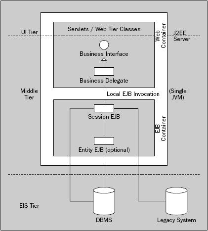

Arquitecturas Distribuidas. MDA
Arquitectura y Java EE
Desarrollar aplicaciones con arquitecturas multinivel implica el uso de computación distribuida, lo que complica el proceso de desarrollo. Aunque la plataforma JavaEE simplifica en gran medida el desarrollo de sistemas en tres niveles, el diseño de componentes distribuidos es más complejo que si nos centráramos en uno o dos niveles.
Esta complejidad extra debe estar justificada por los requisitos del sistema, ya que se trata de una decisión que va a condicionar la naturaleza del proyecto.
Si podemos evitar el uso de una arquitectura distribuida para los sistemas que no lo necesitan, obtendremos un diseño más simple. El hecho de evitar la complejidad nos va a ayudar a cumplir un calendario apretado.
La complejidad va a:
- dificultar la comprensión del diseño y el código
- alargar los tiempos de desarrollo debido a la curva de aprendizaje
- encarecer el mantenimiento del software
- dificultar la evaluación y aplicación de los cambios
- provocar la realización de errores
A continuación vamos a evaluar las ventajas e inconvenientes de los sistemas distribuidos y considerar posibles arquitecturas que no se basen en componentes distribuidos
Arquitecturas de 2 Capas vs Multicapa
Antes de la entrada de las tecnologías distribuidas como JavaEE o CORBA, los sistemas de empresa normalmente utilizaban una arquitectura de 2 capas conocida como cliente/servidor, la cual se desplegaba a su vez en 2 niveles..
Bajo el modelo de cliente/servidor, la lógica de negocio se implementaba como parte integrada de un cliente rico y pesado que accedía al servidor para obtener los datos de una base de datos centralizada.
El modelo cliente/servidor disfrutó de un éxito considerable, ya que era fácil de comprender, fácil de probar y soportado por numerosas herramientas de desarrollo visual a alto nivel.
El problema es que la arquitectura de 2 capas/niveles tiene las siguientes limitaciones:
- Despliegue: en las grandes empresas donde existen miles de clientes, el hecho de realizar un despliegue supone un reto logístico
- Compartición de servicios: si la aplicación debe compartir servicios dentro de la empresa, y la lógica esta integrada con los clientes, tenemos una gran redundancia de código entre las diferentes aplicaciones.
- Pobre separación de la presentación y la lógica de negocio: este tipo de arquitectura provoca un alto acoplamiento, ya que es muy fácil mezclar ambas capas.
Debido a estas limitaciones, la comunidad de desarrollo concluyó que era necesaria una tercera capa de negocio que se colocara entre las 2 anteriores, apareciendo la necesidad de un tercer nivel.
El uso de una capa intermedia de negocio ofrece ciertos beneficios respecto al modelo cliente/servidor:
- Inteligencia de negocio centralizada: al estar centralizado y accesible por un sistema remoto, resuelve el problema de juntar presentación y negocio
- Fácil despliegue: ya no es necesario actualizar miles de cliente. Al tener el negocio centralizado, los cambios se pueden desplegar de forma rápida y fácil con un mínimo impacto sobre el sistema base del usuario
- Redundancia: al poder desplegar la capa de negocio en un cluster, ofrecemos un conjunto de máquinas replicadas que mantienen un entorno de alta disponibilidad
- Escalabilidad: del mismo modo, el cluster de negocio nos permite incrementar el número de máquinas conforme crece la demanda de los clientes.
Estos beneficios han provocado que el modelo multicapa sea la arquitectura por defecto para las aplicaciones de empresa. La plataforma JavaEE ofrece componentes distribuidos para desarrollar sistemas mediante arquitecturas multicapa/multinivel, siendo los EJBs una tecnología clave para los componentes de negocio distribuidos en un nivel intermedio.
Enterprise JavaBeans
Los EJBs permiten desarrollar aplicaciones usando una arquitectura basada en componentes.
La arquitectura EJB define componentes, conocidos como Beans de Empresa, que encapsulan funcionalidad en módulos desplegables, los cuales están claramente definidos mediante interfaces.
Como ya sabemos, la plataforma JavaEE ofrece 3 tipos de EJBs:
- Beans de Sesión (SBs): encapsula la lógica de negocio
- Beans de Entidad (EBs): mecanismo que ofrece una vista de entidades basadas en objetos dentro de un almacén persistente de datos.
- Beans dirigidos por el Mensaje (MDBs): consume mensajes entregados al servidor via el API JMS
Una arquitectura EJB ofrece beneficios substanciales a la hora de construir una aplicación empresarial:
- Incrementa la productividad mediante la gestión de las transacciones y la seguridad mediante información especificada en el descriptor de despliegue.
- Ofrece escalabilidad gestionando inteligentemente los recursos y ofreciendo transparencia de estado en los componentes "con estado".
- Ofrece y hace de mediador entre los componentes de negocio y múltiples tipos de cliente, tanto pesado como aplicaciones web ligeras.
- Aísla al cliente de los temas de la red mediante transparencia de localización, de modo que se pueden invocar a los componentes sin necesidad de saber donde están desplegados.
Este último punto de transparencia de localización es de especial interés, ya que los EJBs permiten el desarrollo de arquitecturas distribuidas mediante el modelo de componentes que ofrece JavaEE.
Interfaces Remotos o Locales
Los clientes de un bean de sesión pueden acceder a éste mediante su interfaz remoto o local. Si se utiliza el interfaz remoto, un cliente ejecutándose en una JVM separada accede a la instancia del EJB. Con acceso local, el cliente reside en la misma JVM que bean.
De forma alternativa, con la especificación de EJB 2.1, los cliente puede acceder a los beans mediante Web Services. Esto no es más que otra forma de acceso remoto.
Componentes Distribuidos
El uso de EJBs con interfaces remotos permite el desarrollo de sistemas con arquitecturas distribuidas. La plataforma JavaEE ofrece una gran ayuda para construir arquitecturas complejas de éste tipo. Sin embargo, añadir interfaces remotos a los objetos de negocio implica ciertos aspectos que el arquitecto debe tener en cuenta antes de decidirse por este tipo de planteamiento.
Rendimiento
La tecnología EJB se basa en el estándar RMI, él cual ofrece la transparencia necesaria para acceder a un bean a través de su interfaz remoto. Sin embargo, el proceso de ejecutar una invocación a un método a través de una JVM o entre máquinas distintas, hace las llamadas RMI mucho más costosas que si se hicieran a un objeto local.
Por cada llamada, RMI crea un objeto stub en el cliente que se responsabiliza de enviar los parámetros del método y de recibir la respuesta a través de la red (marshalling). El stub del cliente no habla directamente con el objeto del servidor, sino con el skeleton RMI. Del mismo modo, una vez ejecutado el método remoto, este skeleton se volverá a comunicar con el stub del cliente para devolver la información.
Por ello, se produce una sobrecarga en la llamada de los métodos. Por lo tanto, tenemos que cuidar el diseño de las llamadas para asegurarnos que los beneficios de la transparencia de localización no son menores que la penalización de rendimiento obtenida.
Para reducir el tamaño de algunos objetos, se pueden excluir objetos innecesarios marcándolos con la palabra clave transient
Complejidad
Aunque RMI puede hacer parecer que simplifica las llamadas a un bean remoto, la computación distribuida introduce cierta complejidad extra al desarrollador.
Se debe tener en cuenta la diferencia entre el paso de variables por valor en las llamadas remotas, y el paso por referencia en las locales. Además, los clientes remotos pueden gestionar las posibles excepciones lanzadas por problemas en la red.
Impedancia Orientada a Objetos
El uso de las capacidades distribuidas de los EJBs requiere un cambio en el modo que aplicamos las prácticas de diseño orientado a objetos.
En una arquitectura no-distribuida, los desarrolladores trabajan directamente con los objetos del modelo del dominio. Aquí, los objetos del dominio representa entidades de negocio y exponen interfaces con métodos de granularidad fina, como pueden ser los métodos get y set de un javabean.
La penalización de rendimiento de una aplicación distribuida descarta el uso de éste tipo de objetos, ya que incrementa el número de llamadas a través de la red.
Para mantener el número de viajes de ida y vuelta al mínimo, los interfaces remotos se deben diseñar con granularidad gruesa, donde los métodos combinan la funcionalidad de varios métodos finos en una sola llamada.
Una ayuda a la hora de diseñar los métodos es el uso de los patrones de diseño, en especial, aquellos que tratan con componentes distribuidos, como pueden ser Session Façade y Transfer/Value Object. Más información en Patrones para Aplicaciones Distribuidas
A pesar de la existencia de los patrones, el arquitecto debe tener en cuenta las restricciones que ofrecen las tecnologías, y reflejarlo en las arquitecturas diseñadas. Si las tecnologías marcan el modo de diseñar el interfaz de un componente, estamos contradiciendo las pautas de un buen diseño orientado a objetos.
Elección de un Diseño Apropiado
Los componentes distribuidos no son un prerrequisito para todas las arquitecturas empresariales. A menos que los requisitos del sistema dicten la necesidad de una arquitectura distribuida, siempre se podrá implementar una aplicación más sencilla que evite el uso de las llamadas remotas.
Propuestas de Arquitecturas Java EE
Arquitectura JavaEE Local
Para solucionar algunos de los problemas en la arquitectura vista previamente, la siguiente solución modifica la arquitectura para incorporar los EJBs que ofrecen una vista local de sus interfaces a los clientes.
Por un lado, la especificación de servlets 2.3 garantiza que los objetos de la capa web puedan acceder a los EJBs vía sus interfaces locales si la aplicación se despliega en un servidor de aplicaciones JavaEE integrado en un única JVM. Esto nos permite beneficiarnos de los servicios ofrecidos por el contenedor EJB, pero sin incurrir en la excesiva complejidad ni la necesidad de hacer nuestra aplicación distribuida.
Por el otro, la especificación de EJB 2.0, introdujo los interfaces locales como respuesta a la presión de la industria respecto al rendimiento de las arquitecturas EJB. Como ya sabemos, el uso de interfaces locales permite el uso de la convención de paso por referencia, evitando la sobrecarga incurrida en las llamadas remotas.
Ventajas
El uso de arquitecturas con EJBs locales ofrece las siguientes ventajas:
- Es menos compleja que una aplicación EJB distribuida
- El uso de los EJBs no altera el diseño básico de la aplicación. En este tipo de arquitectura, podemos hacer EJBs sólo aquellos objetos que necesitan servicios del contenedor EJB.
- Este tipo de uso de los EJBs implica una penalización de rendimiento muy pequeña (casi despreciable), ya que no realiza llamadas remotas ni serialización de los objetos.
- Ofrece los beneficios del contenedor EJB tales como la gestión de las transacciones, seguridad declarativa y gestión de la concurrencia.
- En el caso de quererlo, podemos utilizar beans de entidad
Limitaciones
Hemos visto que esta arquitectura representa un buen uso (y valido) de la tecnología EJB, donde los requisitos del sistema pueden utilizar la seguridad declarativa y la gestión de las transacciones. Algunas de las debilidades son:
- Es más compleja que una aplicación web pura.
- Todavía no soporta otro tipo de clientes que no sean el interfaz web, a no ser que añadamos una capa de servicios web.
- Toda la aplicación corre sobre la misma JVM, lo que significa que todos los componentes debe ejecutarse en el mismo servidor físico y no se pueden separar para desplegarlos en servidores diferentes.
- Este tipo de EJBs son difícil de probar. Necesitamos hacerlo desde casos de prueba que lo hagan dentro del servidor JavaEE (con Cactus).
- Todavía existe la tentación de modificar el diseño de lo objetos como resultado del uso de los EJBs. Incluso con interfaces locales, existe un pequeño ralentizacimiento en las llamadas a los métodos, lo que nos puede llevar a modificar la granularidad natural de los objetos de negocio.
A veces podemos decidir introducir EJBs en una arquitectura, que en un principio no los necesita. Si seguimos el enfoque XP de "haz la cosa más simple que pueda funcionar", puede que los requisitos funcionales no justifiquen la complejidad introducida por los EJBs, pero la incorporación de futuros requisitos puede aconsejar su uso.
Si adoptamos los interfaces como componentes de negocio, tal como en la arquitectura anterior, el hecho de introducir EJBs con interfaces locales no conlleva ningún problema. Simplemente, podemos elegir que interfaces queremos hacerlos accesibles desde proxys.
Si introducimos EJBs remotos, la cosa cambia. Ya no es una cuestión de meter o no meter EJBs, sino que modifica completamente la naturaleza de la aplicación. Por ejemplo, la granularidad de los interfaces de negocio puede necesitar ser más gruesa para evitar el múltiple uso de llamadas remotas y conseguir un rendimiento adecuado. También puede que queramos mover toda la lógica de negocio dentro del contenedor EJB...
Implementación
En la siguiente arquitectura, la capa web es idéntica a la vista anteriormente. Los interfaces de negocio son idénticos. La diferencia está en su implementación, lo que atañe a la capa EJB. Por lo tanto, la capa de middleware se divide en dos (los interfaces de negocio corriendo en el contenedor web y los EJBs), pero ambas partes ejecutándose dentro de la misma JVM.
Así pues, hemos cambiado los objetos de negocio por beans de sesión, los cuales los desplegamos sobre el contenedor EJB del servidor JavaEE.
Tenemos 2 posibilidades para implementar los interfaces de negocio:
- mediante un Proxy, en el cual un EJB local implementa el interfaz de negocio directamente, y se le ofrece una referencia al interfaz del EJB local en el código del contenedor web, sin la necesidad de realizar la búsqueda JNDI.
- mediante un Business Delegate, en el cual el la implementación del interfaz de negocio del contenedor web delega de forma explicita en el EJB apropiado. Esto tiene la ventaja de soportar el cacheo y permitir a las operaciones fallidas recuperarse en el lugar apropiado.
En ninguno de los dos casos hemos de preocuparnos por capturar la excepción java.rmi.RemoteException, ya que no existen errores de transporte.

En esta arquitectura, a diferencia de una arquitectura que expone los interfaces remotos vía EJB, el uso de los EJBs simplemente es una elección de implementación, pero no una característica fundamental de la arquitectura. Cualquiera de los interfaces de negocio puede implementarse sin usar EJBs, lo que no conllevaría ningún cambio en el diseño global de la aplicación.
Por lo tanto, estamos ante una arquitectura comprometida con el rendimiento, la cual es posible gracias a las mejoras introducidas en la especificación EJB 2.0
Arquitectura JavaEE Distribuida
Se trata de la arquitectura clásica JavaEE. Ofrece la capacidad de partir la capa de middleware de forma física y lógica, usando diferentes JVMs para los EJbs, de modo que los componentes web puedan utilizarlos. Se trata de una arquitectura compleja, con una sobrecarga de rendimiento significativa.
Ventajas
El uso de arquitecturas distribuidas ofrece las siguientes ventajas:
- Soporta todos los tipos de cliente JavaEE mediante una capa de middleware compartida.
- Permite la distribución de componentes de aplicación a través de los diferentes servidores físicos. Esto funciona particularmente bien si la capa de EJB es "sin estado". Las aplicaciones JavaEE con capa de presentación con estado (mediante el uso del objeto Session), pero con la capa de middleware sin estado (mediante Stateless Session Beans) se benefician de este tipo de despliegue y obtienen la máxima escalabilidad posible.
Limitaciones
Las limitaciones de esta arquitectura son:
- Se trata del enfoque más complejo de los que hemos considerado. Si los requisitos de la aplicación no obligan a esta complejidad, estaremos malgastando recursos a lo largo del ciclo de vida del proyecto, y sembrando un campo fértil para la aparición de errores.
- Afecta al rendimiento. Las llamadas a métodos remotos pueden ser cientos de veces más lentas que las llamadas locales por referencia. El efecto de esta sobrecarga de rendimiento depende del numero de llamadas remotas necesarias.
- Las aplicaciones distribuidas son difíciles de probar y depurar.
- Todos los componentes de negocio deben ejecutarse en el contenedor EJB. Mientras esto ofrece un interfaz comprensible para los clientes remotos, es un aspecto problemático si el EJB no puede utilizar para resolver todos los problemas impuestos por los requisitos de negocio. Por ejemplo, si el patrón de diseño Singleton es una buena elección, será muy difícil de implementar satisfactoriamente mediante EJBs.
- El diseño OO se dificulta por el uso centralizado de RMI.
- La gestión de las excepciones es más compleja en sistemas distribuidos. Se deben controlar tanto los errores de transporte como los de aplicación.
Implementación
Aunque el diagrama muestre una aplicación web, esta arquitectura soporta cualquier tipo de cliente JavaEE. Por lo tanto, se trata de una arquitectura preparada para las necesidades de las aplicaciones cliente.
Esta arquitectura utiliza RMI entre las capas de presentación (o con otros cliente remotos) y los objetos de negocio, los cuales están expuestos como EJBs (los detalles de la comunicación RMI los abstrae el contenedor de EJBs, pero hemos de tratar con las implicaciones de su uso). Esto hace las invocaciones remotas un factor determinante de rendimiento y una consideración central a la hora de realizar el diseño. Como vimos anteriormente, hemos de minimizar el número de llamadas remotas (evitando las llamadas "chatty"). Además, todos los objetos enviados deben ser serializables, y debemos tratar con requisitos de gestión de errores más complejos.
La capa web de esta arquitectura es la misma que hemos comentado antes. Sin embargo, la implementación del interfaz de negocio debe tratar el acceso remoto al EJB en el, posiblemente remoto, contenedor EJB.
De las 2 posibilidades de conectividad vistas anteriormente, solo el enfoque del Business Delegate es útil en este caso, ya que todos los métodos del interfaz remoto del EJB lanzan java.rmi.RemoteException.
Al tratarse de una excepción chequeada, a no ser que utilicemos un Business Delegate para contactar con los EJBs y envolver las excepciones RMI como excepciones de ejecución o aplicación, la capa de presentación deberá capturar la excepción remota, lo cual la ata de forma inapropiada a la implementación del EJB.
¿Y tu qué eliges?
Tras ver las diferentes alternativas arquitecturales, podemos hacer una elección de si una nueva aplicación necesita un servidor de aplicación completo (con soporte de JTA, JCA, EJBs) o un contenedor web como Tomcat.
Existen diferentes beneficios para evitar el uso de un servidor de aplicaciones, tales como:
- Menor coste de licencia, en el caso de productos comerciales. Muchas empresas están pagando la licencia de un producto que no necesitan.
- Arranque más rápido, lo que nos ahorra tiempo de desarrollo.
- Administración más sencilla, y por lo tanto, curva de aprendizaje menor.
Las aplicaciones web que sólo utilizan una base de datos rara vez requieren un servidor de aplicaciones. Los contenedores ligeros (tipo Spring) ofrecen mejores alternativas que un contenedor EJB para gestionar los objetos de negocio en la mayoría de las aplicaciones web. Las transacciones distribuidas, y por tanto JTA, no son necesarias cuando trabajamos con una única base de datos.
Necesitamos un servidor de aplicaciones si:
- necesitamos transacciones distribuidas
- queremos que nuestra aplicación sea remota, para lo cual los EJBs son una buena solución. Sin embargo, los servicios web remotos ofrecen casi las mismas prestaciones (recuperación frente a caída del servidor, clustering, ...) sin necesidad de un servidor de aplicaciones para ofrecer escalabilidad y tolerancia.
Resumiendo, en las arquitectura que no son EJB, el factor crítico que se hecha en falta es la gestión de las transacciones. Por ello, debemos asegurarnos que nuestros requisitos se cumplen con transacciones locales o distribuidas.
Model Driven Architecture (MDA)
MDA (Arquitectura Dirigida por el Modelo) se trata de un enfoque al desarrollo de software definido por el OMG que combina la práctica del modelado y la generación de código en un único paradigma. MDA promueve ambas tecnologías al máximo, mediante el uso de modelos como la base para la generación de una cantidad importante de código de la aplicación.
MDA fomenta un enfoque centrado en el negocio y utiliza el modelado como un medio para que el arquitecto se centre en las funcionalidades del sistema que son críticas para el negocio sin la distracción de los aspectos técnicos
El uso de modelos y generación de código ofrece los siguientes beneficios (los cuales son semejantes al uso de UML):
- Reducción de los tiempos de desarrollo. MDA se centra en los modelos, no en el código. Los modelos se producen a nivel de negocio, y se traducen a código mediante herramientas sofisticadas de generación de código. La destreza para pasar del modelo de negocio a la implementación reduce la mayoría de los esfuerzos de codificación y permite la disponibilidad de un sistema ejecutable en fases tempranas del ciclo de vida del proyecto.
- Calidad homogénea del software. MDA pone bajo el control del arquitecto el proceso automático de transformar los modelos en implementaciones. El arquitecto puede producir reglas de transformación para convertir los modelos en código. Este proceso de transformación también se puede aplicar a cualquier proyecto de desarrollo, resultando en un software el cual es consistente respecto a su calidad y uso de estándares.
- Portabilidad de plataforma. Los modelos que inician el proceso MDA son independientes de la plataforma. Mediante el uso de generadores de código a medida para un tipo especifico de plataforma, MDA permite a los sistemas abarcar cualquier tecnología o framework para el cual exista el correspondiente generador de código.
El enfoque MDA define un proceso según el cual puede generarse una aplicación funcional a partir de un modelo del dominio de negocio, el cual se conoce como Modelo Independiente de la Plataforma (PIM). Este salto del modelo conceptual a una aplicación funcional se consigue mediante el refinamiento sucesivo de una serie de modelos, en el cual cada modelo se genera mediante abstracciones de los niveles inferiores. El modelo final del proceso esta fuertemente acoplado a la plataforma de destino, y por lo tanto, se puede generar un alto porcentaje del código de la aplicación.
Plataforma
MDA utiliza el término plataforma para abordar todos los aspectos técnicos relacionados con la implementación, aquellos que son irrelevantes para la funcionalidad del componente de software.
Esta definición cubre aspectos técnicos como la elección del middleware (JavaEE o .NET), los patrones de diseño a utilizar, framework MVC a utilizar en una aplicación Web, etc...
Como veremos más adelante, MDA pone un gran énfasis en la neutralidad de plataforma y separa la funcionalidad del negocio de los requisitos del diseño de la plataforma de destino
Modelos
El paradigma MDA utiliza modelos por todos los beneficios asociados con el modelado, como pueden ser la facilidad de comunicación, tanto con el cliente como con los integrantes del equipo de desarrollo, o el medio de validar el diseño respecto a los cambios de requisitos mediante los diagramas de interacción UML.
MDA maximiza los beneficios del modelado haciendo que el modelado sea el elemento centro del proceso de desarrollo, e incorporando las ventajas de la generación automática de código de aplicación.
Mediante MDA, los modelos se transforman en niveles decrecientes de abstracción hasta llegar a nivel de la aplicación. Se conoce como refinamiento a la relación entre los modelos que ofrece una visión del mismo sistema mediante diferentes niveles de abstracción.
Existen 2 tipos de modelos que forman la columna vertebral del paradigma MDA: el mencionado PIM y el especializado Modelo eSpecífico de Plataforma (PSM).
En este listado se puede añadir el código del modelo, o la implementación. La OMG defina la implementación como una especificación capaz de ofrecer toda la información necesaria para poner la aplicación en funcionamiento. El código fuente producido por una implementación particular se considera un modelo MDA, y es ejecutable mediante un ordenador.
La siguiente figura muestra el ciclo de vida entre los diferentes modelos MDA.
PIM (Modelo Independiente de la Plataforma)
El PIM es el resultado de una fase de análisis intensivo y se centra en las funcionalidades principales de negocio que el cliente solicita. Tal como indica su nombre, El PIM ofrece una visión del sistema que no esta restringida a ninguna plataforma en particular. De hecho, el PIM expresa el comportamiento puro de negocio.
La OMG recomienda el uso de UML para construir el PIM, donde los diagramas de clases describen el dominio del negocio. Ya que el PIM se construye en colaboración con el cliente, los diagramas UML son un efectivo mecanismo de comunicar las intenciones y el comportamiento del sistema.
Lo que nunca debe mostrar el PIM son las tecnologías específicas requeridas para implementar la aplicación. Para ello tenemos el PSM.
PSM (Modelo eSpecífico de Plataforma)
El PSM es una refinamiento del PIM para una plataforma en particular, donde la plataforma representa el sistema operativo real, frameworks, middleware, gestor de base de datos, o cualquier tecnología a nivel de implementación del sistema. Por lo tanto, el PSM está muy cercano con el código de la aplicación, de modo que el el código puede generarse a partir de la estructura que defina el modelo.
El PSM es equivalente al tipo de modelo producido por las herramientas de modelado (tipo Borland Together o Rational Software Architect). Se trata de una abstracción a bajo nivel que se sitúa por encima de la implementación final. Mediante un proceso de transformación apropiado, el PSM puede refinarse en código de aplicación ejecutable.
El proceso de transformación entre los distintos tipos de modelos se conoce como mapping y es otro de los conceptos clave de MDA.
Mapping
El elemento clave del paradigma MDA es el método mediante el cual los modelos se transforman desde el PIM a una aplicación en funcionamiento, y el éxito del paradigma reside en la efectividad con la que esta pueda automatizarse.
Fundamentalmente, un mapping es un conjunto de reglas y técnicas que permiten a un tipo de modelo convertirse en otro, por ejemplo, un mapping de un PIM a un PSM.
Tal como hemos comentado, el paso de PSM a la implementación es una tarea de generación de código que ya realizan diversas herramientas existentes en el mercado con gran éxito. El mayor reto para las herramientas MDA yace en la transformación del PIM al PSM.
En el desarrollo convencional sin MDA, el arquitecto instruye al equipo de desarrollo como se va a transformar el PIM en un diseño ejecutable. El arquitecto quizás decida implementar la aplicación Web mediante Struts en vez de usar JSF. Del mismo modo, puede decidir construir la capa de persistencia mediante Hibernate en vez de utilizar beans de entidad.
Las decisiones del arquitecto no son simplemente un listado de frameworks y tecnologías. También puede elegir acceder a la capa de persistencia mediante el patrón Data Access Object, con Value Objects retornados a la aplicación cliente a través de un Session Façade.
Estas decisiones a nivel de arquitectura, y muchas más, deben aplicarse por el equipo de diseño para llevar un PIM hasta el punto que pueda construirse un solución. Para que las herramientas MDA vayan desde el PIM al PSM también deben seguir la misma dirección. Esta es una tarea muy compleja que todavía hace pasar apuros incluso a los mejores arquitectos y diseñadores.
El enfoque MDA plantea que el proceso de transformación puede ser manual, pero los beneficios reales de MDA solo se consiguen si se automatiza el proceso mediante el uso de herramientas software. En este aspecto, una herramienta MDA se puede considerar como un sistema experto, ya que se aplica el conocimiento y la destreza del arquitecto experto al problema del mapping.
MDA vs Modelado Tradicional
Las herramientas de modelado como Borland Together (www.borland.com/us/products/together/index.html), Gentleware Poseidon (www.gentleware.com/products.html) o MagicDraw (www.magicdraw.com) permiten al ingeniero de software emplear modelos UML para desarrollar aplicaciones. Una pregunta muy común es en qué se diferencian los procesos centrados en el uso de estas herramientas respecto a un enfoque de desarrollo MDA.
Las semejanzas entre los 2 enfoques son muy claras. Ambos potencian las técnicas de modelado para dirigir el proceso de desarrollo, y el conjunto de herramientas necesarias es complejo y necesita de cierto tiempo para tener destreza. Además, ninguna aclama que sea una capa fácil de utilizar por encima de JavaEE. Para cada enfoque, existen grandes prerrequisitos como un gran conocimiento técnico y habilidades de diseño.
No obstante, las diferencias entre MDA y otras metodologías de desarrollo dirigidas por el modelo existen. Los siguientes apartados aclaran estas diferencias mediante las ventajas e inconvenientes de MDA para el desarrollo de software.
Ventajas
Las diferencias entre los 2 enfoques vienen dadas por los niveles de abstracción empleados. MDA fomenta el uso de PIMs de alto nivel para conducir el proceso de desarrollo. Este alto nivel de trabajo otorga a MDA la principal ventaja sobre los procesos de modelado convencionales y especifico a una determinada plataforma.
Centrada en el Negocio
La construcción de modelo del dominio independiente de la plataforma no es exclusivo del paradigma MDA. Los modelos de dominio se construyen comúnmente como resultado de cualquier enfoque centrado en el modelo.
Metodologías de modelado tradicional confían en el modelo de negocio para fomentar la compresión del dominio del problema con el cliente. El arquitecto utiliza los requisitos capturados en los modelos iniciales para construir un PSM, el cual se puede convertir rápidamente en código mediante la mayoría de las herramientas de modelado.
La construcción del PSM es una tarea que requiere conocimiento y que consume tiempo. Antes de que la herramienta de modelado pueda generar un sistema que funcione, el equipo de diseño debe haber definido un PSM detallado.
La herramienta de modelado genera un sistema a partir del PSM, pero no asiste en la transformación de los requisitos de negocio en un sistema funcional. Como consecuencia, el arquitecto en vez de repartir su atención entre las diferentes necesidades de negocio del cliente, se centra en los retos técnicos de implementar una solución para una plataforma específica.
La necesidad de que el arquitecto diseñe un PSM es una distracción que puede provocar que los modelos iniciales de negocio no sean totalmente correctos. Mediante las herramientas convencionales, el PSM se convierte en el aspecto principal de los esfuerzos de desarrollo.
MDA fuerza al arquitecto a centrarse primero en el modelo del dominio, o PIM, y considerar el PSM como un paso más hacia la aplicación final. El uso de PIM para conducir el proceso de desarrollo mantiene la atención en los requisitos del cliente, y no en la plataforma de implementación.
Soporta un Proceso de Desarrollo Incremental
Una herramienta MDA puede convertir un modelo de negocio en una aplicación funcional mediante el click de un botón, con reglas de mapping que rellenen los huecos dejados por la falta de infraestructuras requeridas por la plataforma de destino. Esta claro que el sistema generado será muy pobre y con mucha falta de funcionalidad crítica de negocio. Sin embargo, la aplicación generada ofrece una base sólida sobre la cual construir la funcionalidad restante.
Esta habilidad para saltar del modelo de negocio a una aplicación funcional casa perfectamente con los procesos de desarrollo cortos, incrementales y con iteraciones. De este modo, se puede construir un prototipo funcional a partir de un modelo mínimo en un período de tiempo mínimo. Este tipo de proceso de desarrollo ha demostrado sus beneficios, no solo por su rapidez, sino para construir sistema que cumplan las necesidades del cliente de un modo preciso.
Facilita los Cambios
Las herramientas de modelado tradicional ofrecen un mapping uno a uno con el código de la aplicación. Un cambio es una propiedad de una clase en un diagrama de clases UML, y una única clase Java se verá afectada. Algunos cambios en los modelos no tienen efecto en el código generado. El cambio de una relación de una asociación a una composición o una agregación, no provocará ningún cambio en el código fuente.
Mediante una herramienta MDA, un cambio en el PIM provoca un cambio extendido a lo largo de la aplicación generada. La actualización de una entidad de negocio en un PIM se propaga en todas las capas de la arquitectura. El DDL generado para crear las tablas de base de datos cambia; los objetivos de la capa de persistencia cambian; los componentes de negocio cambian; y los correspondientes componentes de aplicación web también cambian.
Esta habilidad para que la aplicación se mantenga sincronizada con los pequeños cambios del modelo conceptual es una de las características más poderosas de las herramientas MDA, permitiendo que los cambios en los requisitos del cliente sean efectivos de un modo extremadamente rápido.
Menos Incidencias de Aplicación
Una alto porcentaje de las incidencias encontradas en el código de una aplicación son el resultado de errores de codificación en contra de requisitos mal especificados. Mediante las mejores prácticas de generación de código en el mapping de PIM a PSM, el riesgo extra de errores de codificación se reduce considerablemente.
Portabilidad de Tecnología
Java es un lenguaje de desarrollo multiplataforma, lo cual implica la pregunta ¿Porqué un paradigma que se centra en la independencia de la plataforma es relevante para construir soluciones JavaEE? La respuesta reside en la interpretación del término plataforma.
JavaEE es una plataforma en constante evolución. Continuamente aparecen nuevas especificación que extienden la plataforma, como por ejemplo, la reciente especificación EJB 3.0. Mantener el ritmo de los cambios, y por tanto, mantener un sistema tecnológicamente actualizado, es una lucha constante.
MDA, mediante el uso de modelos que describen los sistemas utilizando semánticas independientes de la plataforma, puede ayudar a extender la vida de un sistema asegurando que la funcionalidad se mantiene a lo largo de las diferentes tecnologías.
El paradigma MDA pueda hacer que nos adaptemos mejor respecto a los cambios de las tecnologías. Para los ingenieros software, MDA reduce los costes del cambio, haciendo posible adoptar tecnologías emergentes sin la necesidad de actualizaciones de la aplicación prohibitivamente costosas.
Inconvenientes
Por muy poderosa que parezca el paradigma MDA, también tiene su talón de Aquiles. Algunos de los inconvenientes son:
Trabajar con Sistemas Heredados (Legacy)
Un área donde las herramientas MDA fracasan es en el modelado convencional duplicado entre las aplicaciones existentes y las estructuras de datos. Las herramientas de modelado pueden realizar ingeniería inversa de las aplicaciones en modelos. Sin embargo, tal y como el código es una representación del sistema implementado para una plataforma específica, los modelos que construyen estas herramientas también son específicos de una determinada plataforma. Es decir, no se realiza ingeniería inversa al nivel del PIM.
El mapping de PSM a PIM es complejo y difícil de automatizar. La mayoría de herramientas MDA centran sus esfuerzos en mapear de PIM a PSM. Consecuentemente, quien busque la ingeniería inversa desde un PIM para seguir un enfoque MDA tiene un duro trabajo. El estándar MDA especifica un mapping de PSM a PIM; sin embargo, en la actualiza pocas herramientas pueden demostrar este mapping de forma satisfactoria.
Incluso si se produce un PIM para un sistema existente, los problemas todavía existen. La capacidad de una herramienta MDA para hacer efectivos los cambios en el código de la aplicación mediante un pequeño cambio en el PIM es muy reducida debido al enfoque intrusivo de MDA (estamos matando moscas a cañonazos).
Dados estos retos técnicos en el mapping inverso hacia un PIM, los métodos de modelado convencional son más efectivo cuando se extiende o modifica una aplicación existente o estructuras de datos. Aunque el enfoque MDA debería dominar este área, una herramienta de modelado es el escenario más efectivo porque permite al arquitecto realizar pequeños y estratégicos cambios en un posible arquitectura frágil.
Viabilidad
En teoría, MDA es la última solución para el desarrollo rápido. Produce un modelo preciso de alto nivel a partir de los requerimientos del sistema, se pulsa un botón, y se genera el sistema. En la práctica ¿funciona?
El enfoque suena simple y obvio, pero también suena simple viajar de Madrid a Nueva York mediante el teletransporte instantáneo pero no es tan fácil. Mientras que todas las teorías en papel son factibles, hacer el concepto realidad es muy diferente.
El mapping de PIM a PSM es una tarea compleja. Se trata de un tarea atractiva para un equipo de diseño bien formado; automatizar el proceso tiene que ser más difícil todavía. Es en este área donde los oponentes de MDA proclaman la caída del paradigma, ya que no es posibles realizar una aplicación de calidad sin la intervención de un ingeniero con habilidades
A pesar de estas quejas, ya existen diversas herramientas MDA. Las herramientas comerciales más conocidas son OptimalJ (www.compuware.com/products/optimalj) y ArcStyler (www.interactive-objects.com/products/arcstyler). En cuanto a Open Source, siendo una herramienta emergente, tenemos AndroMDA (www.andromda.org). Además, OMG lista de forma orgullos un número creciente de casos reales exitosos en su web (www.omg.org/mda/products_success.htm)
Para Saber Más
Bibliografía
- Expert one-on-one J2EE Design and Development , de Rod Johnson. Libro que sirvió como base del desarrollo de Spring y que destaca todos los puntos fuertes y debiles de los EJBs, destacando cuando hacer qué y cómo hacerlo.
- Expert one-on-one J2EE Development without EJB, de Rod Johnson. Secuela de libro anterior donde se defiende la Arquitectura de Contenedor Ligero.
- MDA Explained, de Anneke Kleppe. Introducción al enfoque MDA sin entrar en detalle en ninguna herramienta.
Enlaces
- Apartado del tutorial de Sun sobre JavaEE que habla de las Aplicaciones distribuidas en múltiples niveles: java.sun.com/javaee/5/docs/tutorial/doc/Overview3.html
- Videos de demostración de OptimalJ www.compuware.com/products/optimalj/1793_eng_html.htm
- Proyecto de Fin de Carrera en la Universidad de Murcia sobre "Ingenieria de Modelos con MDA" dis.um.es/~jmolina/pfcs/proyecto-mda.pdf